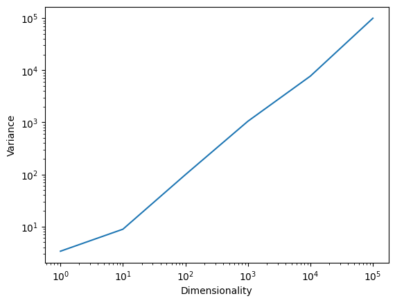

import pandas as pd
from rdkit import Chem
from torch import nn
import torch.nn.functional as F
from torch.utils.data import Dataset, DataLoader
import re
from typing import List
import numpy as np
from math import exp
import matplotlib.pyplot as pltBuilding a GPT that can generate molecules from scratch
machine-learning
llm
Developing an understanding for how LLMs work.
Molecules can be represented in multitude of ways. One of the most widely used representations is to use text, for example in the so-called SMILES notation. In SMILES notation, a molecule is represented as a string of characters, where each character represents an atom or a bond. For example, the SMILES notation for ethanol is CCO. The one for benzene is c1ccccc1. You see that hydrogen atoms are typically omitted in SMILES notation, and that lower case letters are used for aromatic atoms. There is a full grammar for SMILES notation and various alternative representations, but we will stick to this simple version for this notebook.
Important problems that our final solution will need to be able to solve are:
- dealing with inputs of different lengths (e.g, different number of atoms in different molecules)
- incorporating information about the semantic meaning of the atoms in the molecule (to obtain meaningful molecules, the model, e.g., should probably “know” what kind of bonds carbon can form)
- dealing with the interaction between atoms in the molecule (not all arrangements of atoms are equally likely)
import torch
def get_num_parameters(model):
"""Return the number of trainable parameters in the model."""
return sum(p.numel() for p in model.parameters() if p.requires_grad)
def get_num_parameters_per_layer(model):
"""Return the number of trainable parameters in the model per layer."""
layers = {}
for name, p in model.named_parameters():
if p.requires_grad:
layers[name] = p.numel()
return layers
def set_device():
if torch.backends.mps.is_available():
if torch.backends.mps.is_built():
device = 'mps'
elif torch.cuda.is_available():
device = 'cuda'
else:
device = 'cpu'
return device
device = set_device()Dealing with SMILES
Before we can do anything, we need to obtain data. For doing so, we will need a dataset of SMILES strings. We will use the ZINC dataset which is a public database of commercially-available compounds. We will use the 250k subset of the dataset which contains 250,000 compounds.
!wget 'https://deepchemdata.s3-us-west-1.amazonaws.com/datasets/zinc15_250K_2D.tar.gz'
!tar -xzf zinc15_250K_2D.tar.gz/Users/kevinmaikjablonka/.zshenv:.:1: no such file or directory: /Users/kevinmaikjablonka/.cargo/env
--2024-05-02 12:20:55-- https://deepchemdata.s3-us-west-1.amazonaws.com/datasets/zinc15_250K_2D.tar.gz
Resolving deepchemdata.s3-us-west-1.amazonaws.com (deepchemdata.s3-us-west-1.amazonaws.com)... 52.219.120.49, 52.219.120.145, 52.219.193.50, ...
Connecting to deepchemdata.s3-us-west-1.amazonaws.com (deepchemdata.s3-us-west-1.amazonaws.com)|52.219.120.49|:443... connected.
HTTP request sent, awaiting response... 200 OK
Length: 6941580 (6.6M) [application/x-gzip]
Saving to: ‘zinc15_250K_2D.tar.gz’
zinc15_250K_2D.tar. 100%[===================>] 6.62M 1.25MB/s in 14s
2024-05-02 12:21:11 (497 KB/s) - ‘zinc15_250K_2D.tar.gz’ saved [6941580/6941580]
/Users/kevinmaikjablonka/.zshenv:.:1: no such file or directory: /Users/kevinmaikjablonka/.cargo/envAfter downloading and extracting the dataset, we can load it into memory and take a look at some molecules.
df = pd.read_csv('zinc15_250K_2D.csv')Chem.MolFromSmiles(df['smiles'][0])
Before we continue any further, we will also create train/valid and test sets.
train, valid, test = torch.utils.data.random_split(df['smiles'], [200000, 25000, 25000])Tokenization
For training a language model, we will need to split the SMILES into tokens. Tokens are the smallest units of text that the model will work with. The model will learn to predict a molecule token by token. There is not one correct way to do this, but one very common way is to split the SMILES into “chemical tokens”. For this, Philippe Schwaller wrote down a regular expression.
Commonly used other tokenization methods are:
def tokenize(smiles: str) -> List[str]:
"""
Tokenize a SMILES
Args:
smiles (str): SMILES string
Returns:
List[str]: List of tokens
"""
SMI_REGEX_PATTERN = r"""(\[[^\]]+]|Br?|Cl?|N|O|S|P|F|I|b|c|n|o|s|p|\(|\)|\.|=|#|-|\+|\\|\/|:|~|@|\?|>>?|\*|\$|\%[0-9]{2}|[0-9])"""
return re.findall(SMI_REGEX_PATTERN, smiles)The molecule, CCO (ethanol), is tokenized as [‘C’, ‘C’, ‘O’].
tokenize('CCO')['C', 'C', 'O']Converting tokens into IDs
For inputing tokens into a model, we will need to convert them into numbers.
To do so, we will set up a “vocabulary” which is a dictionary that maps tokens to integers. The vocabulary also defines the tokens that are known to the model.
Special tokens
Our model will be fed sequences of fixed length. Our SMILES, however, are of variable length. We will have to pad them to a fixed length. We will use a padding token for this purpose. That is, we will add a specific “[PAD]” token to the vocabulary which only serves the purpose of padding.
Often, we also add other tokens such as [EOS] (end of sequence) or [BOS] (beginning of sequence).
They are typically used as follows:
[BOS]is added at the beginning of each sequence[EOS]is added at the end of each sequence[PAD]is added to the end of each sequence to pad it to a fixed length[UNK]is used to replace tokens that are not in the vocabulary
We can put all of this together in a Tokenizer class.
class Tokenizer:
def __init__(self, tokens: List[str], eos: str = '[EOS]', bos: str = '[BOS]', pad: str = '[PAD]', unk: str = '[UNK]'):
self.tokens = [pad, bos, eos, unk] + tokens
self._token_to_index = {token: index for index, token in enumerate(self.tokens)}
self.index_to_token = {index: token for index, token in enumerate(self.tokens)}
def token_to_index(self, token: str) -> int:
try:
return self._token_to_index[token]
except KeyError:
return self._token_to_index['[UNK]']
def __len__(self):
return len(self.tokens)
def __getitem__(self, item):
return self.token_to_index[item]
def __contains__(self, item):
return item in self.tokens
def encode(self, smiles: str, add_sos: bool=False, add_eos: bool=False) -> List[int]:
"""
Encode a SMILES into a list of indices
Args:
smiles (str): SMILES string
add_sos (bool): Add start of sentence token
add_eos (bool): Add end of sentence token
Returns:
List[int]: List of indices
"""
tokens = []
if add_sos:
tokens.append(self.token_to_index('[BOS]'))
tokens += [self.token_to_index(token) for token in tokenize(smiles)]
if add_eos:
tokens.append(self.token_to_index('[EOS]'))
return tokens
def decode(self, indices: List[int], strip_special_tokens: bool = True) -> str:
"""
Decode a list of indices into a SMILES
Args:
indices (List[int]): List of indices
Returns:
str: SMILES string
"""
decoded = ''.join([self.index_to_token[index] for index in indices])
if strip_special_tokens:
return decoded.replace('[PAD]', '').replace('[BOS]', '').replace('[EOS]', '')
return decodedTo instantiate the tokenizer, we need to pass the list of tokens that we want to use. (This is sometimes called “training” the tokenizer, but in this case, we are just defining the tokens that we want to use.) We will use the following tokens:
tokens = set()
lengths = []
for smiles in train.dataset.values:
tokens_ = tokenize(smiles)
tokens.update(tokens_)
lengths.append(len(tokens_))plt.hist(lengths, bins=50)(array([3.0000e+00, 4.0000e+00, 7.0000e+00, 0.0000e+00, 2.3000e+01,
5.6000e+01, 0.0000e+00, 7.8000e+01, 2.0100e+02, 0.0000e+00,
3.8900e+02, 8.0200e+02, 1.4320e+03, 0.0000e+00, 2.5760e+03,
3.9450e+03, 0.0000e+00, 5.8570e+03, 8.0820e+03, 0.0000e+00,
1.0313e+04, 1.2675e+04, 1.4914e+04, 0.0000e+00, 1.7137e+04,
1.8718e+04, 0.0000e+00, 2.0510e+04, 2.0796e+04, 0.0000e+00,
2.1073e+04, 2.0330e+04, 1.8396e+04, 0.0000e+00, 1.6193e+04,
1.2172e+04, 0.0000e+00, 9.8210e+03, 5.8470e+03, 0.0000e+00,
3.9460e+03, 2.1220e+03, 9.6800e+02, 0.0000e+00, 4.1200e+02,
1.4500e+02, 0.0000e+00, 4.6000e+01, 1.0000e+01, 1.0000e+00]),
array([17. , 17.7, 18.4, 19.1, 19.8, 20.5, 21.2, 21.9, 22.6, 23.3, 24. ,
24.7, 25.4, 26.1, 26.8, 27.5, 28.2, 28.9, 29.6, 30.3, 31. , 31.7,
32.4, 33.1, 33.8, 34.5, 35.2, 35.9, 36.6, 37.3, 38. , 38.7, 39.4,
40.1, 40.8, 41.5, 42.2, 42.9, 43.6, 44.3, 45. , 45.7, 46.4, 47.1,
47.8, 48.5, 49.2, 49.9, 50.6, 51.3, 52. ]),
<BarContainer object of 50 artists>)
tokenizer = Tokenizer(list(tokens))tokenizer.encode('CCO')[45, 45, 38]Embeddings
Currently, we only encode the SMILES strings into a list of indices. There is no inherent meaning to the indices themselves, and we can improve modeling by representing each index as a vector. We call those vectors embeddings, but they are nothing more than a vector representation–like a feature vector–for each index.
Ideally, those vectors ensure that similar indices are close to each other in the embedding space. There are many ways to create those embeddings. But for now it is only important to know this concept.
Positional encoding
The embeddings we just created contain only information about their identity. However, they contain no information about their position in the sequence.
To add positional information, we can add a positional encoding to the embeddings. Again, there are many ways to do this.
A very simple way is called absolute positional encoding. For this we simply add the position index to the embedding vector.
For example
B, T, C = 2, 3, 4 # batch size, sequence length, embedding size
x = torch.rand(B, T, C)
pos = torch.arange(T).unsqueeze(0).repeat(B, 1)Language modeling dataset
A dataset class is a class that inherits from torch.utils.data.Dataset. It is used to load data into a model.
The most important methods of a dataset class are:
__len__: This method returns the length of the dataset. It is used by theDataLoaderto determine how many batches to load.__getitem__: This method returns a single sample from the dataset. It is used by theDataLoaderto load a batch of samples.
class CausalLanguageModelingDataset(Dataset):
def __init__(self, texts, tokenizer, max_length):
self.tokenizer = tokenizer
self.texts = texts
self.max_length = max_length
self.inputs = []
self.targets = []
for text in texts:
input_ids = np.array(tokenizer.encode(text))
# make next token the target create datasets with sliding windows
if len(input_ids) < max_length:
for i in range(1, len(input_ids)):
self.inputs.append(input_ids[:i])
self.targets.append([input_ids[i]])
def __len__(self):
return len(self.inputs)
def __getitem__(self, idx):
input_ids = self.inputs[idx]
target_ids = self.targets[idx]
# Padding input and target
input_ids = self._pad(input_ids, self.max_length)
target_ids = self._pad(target_ids, self.max_length, pad_value=-100) # -100 is often used to ignore loss calculation
return torch.tensor(input_ids, dtype=torch.long), torch.tensor(target_ids, dtype=torch.long)
def _pad(self, sequence, max_len, pad_value=0):
padded_sequence = np.full(max_len, pad_value)
padded_sequence[:len(sequence)] = sequence
return padded_sequenceYou hopefully note something very interesting in this dataset: Based on one SMILES, we can create multiple training examples, because we can slide a window over the SMILES and predict the next token. (Note that our implementation is relatively naiive and is optimized to make this point clear. In practice, you should use dedicated methods, e.g., from the transformers library, to create language model datasets.)
A simple bigram model
The simplest language model is a bigram model. In a bigram model, we predict the next token based on the previous token. A bigram model is the simplest form of n-gram model. In an n-gram model, we predict the next token based on the previous n tokens.
\(N\)-gram models are a simple but effective way to model language. The idea is to predict the next word in a sentence given the previous \(n-1\) words. For example, in a 2-gram (bigram) model, we would predict the next word given only the previous word. In a 3-gram model, we would predict the next word given the previous two words. In general, we would predict the next word given the previous \(n-1\) words.
Formally, we can write down the bigram model as follows:
\[ p(w_i|w_{i-1}) = \frac{C(w_{i-1}, w_i)}{C(w_{i-1})} \]
where \(w_i\) is the \(i\)-th word in the sentence, \(C(w_{i-1}, w_i)\) is the number of times the bigram \(w_{i-1}, w_i\) occurs in the training set, and \(C(w_{i-1})\) is the number of times the word \(w_{i-1}\) occurs in the training set.
Since the bigram model only considers the previous word/token, we only need a lookup table.
Such lookup tables are implemented in PyTorch as nn.Embedding. Keep in mind that an embedding layer is nothing fancy. It works like inputting a one-hot encoded vector in a linear layer:

Using the Embedding layer, we can create a simple Bigram model.
class BigramModel(nn.Module):
def __init__(self, vocab_size: int = 40):
super().__init__()
# "learnable dictionary" that maps one token to another token
self.mapping_layer = nn.Embedding(vocab_size, vocab_size)
def forward(self, x: torch.Tensor) -> torch.Tensor:
# the forward pass only consists of a lookup in the mapping layer
return self.mapping_layer(x)
def loss(self, x, y):
# x has shape (batch_size, sequence_length)
predictions = self.forward(x)
B, T, C = predictions.shape
# predictions has shape (batch_size, sequence_length, vocab_size)
predictions = predictions.view(B*T, C)
# y has the shape (batch_size, sequence_length)
y = y.view(B*T)
# we use cross entropy loss to train the model
return F.cross_entropy(predictions, y)bigram = BigramModel(10)Given a token ID, the model predict how likely each token of the vocabulary is to be the next. Right now, the model is not trained, so it will predict the next token randomly.
F.softmax(bigram(torch.tensor([1])))/var/folders/m9/_txh68y946s4pxy1x2wnd3lh0000gn/T/ipykernel_51170/730608109.py:1: UserWarning: Implicit dimension choice for softmax has been deprecated. Change the call to include dim=X as an argument.
F.softmax(bigram(torch.tensor([1])))tensor([[0.1001, 0.0581, 0.2631, 0.0668, 0.0498, 0.0121, 0.0129, 0.1628, 0.0420,
0.2324]], grad_fn=<SoftmaxBackward0>)For generating a sequence, we can implement a generate method that iteratively predicts the next token and appends it to the sequence. We can then use this method to generate a sequence of a given length.
class BigramModel(nn.Module):
def __init__(self, vocab_size):
super().__init__()
# read of the logits of the next token from table
self.mapping_table = nn.Embedding(vocab_size, vocab_size)
def forward(self, x):
# x is a tensor of shape (B, T)
return self.mapping_table(x) # returns tensor of shape (batch_size, time_steps, vocab_size)
def loss(self, x, y):
# x is a tensor of shape (B, T)
logits = self.forward(x) # (B, T, C)
B, T, C = logits.shape
logits = logits.view(B*T, C)
y = y.view(B*T)
loss = F.cross_entropy(logits, y)
return loss
def generate(self, x, max_new_tokens=100):
# x is a tensor of shape (B, T)
# we generate max_new_tokens new tokens
new_tokens = []
for _t in range(max_new_tokens):
logits = self.forward(x) # (B, T, C)
logits = logits[:, -1, :] # we only care about the last token in Bigram, hence we bow have shape (B, C)
probs = F.softmax(logits, dim=-1) # we generate probabilities for the next token
# torch.multinomial(probs, num_samples=1) returns a tensor of shape (B, 1)
# where each element is the index of the sampled token
next_token = torch.multinomial(probs, num_samples=1)
new_tokens.append(next_token)
x = torch.cat([x, next_token], dim=1)
return x
To evaluate the model performance, we will use the helper function below.
As performance metric we will use perplexity. Perplexity is a metric that measures how well a probability model predicts a sample. It is defined as \(2^H\), where \(H\) is the cross entropy loss. The lower the perplexity, the better the model.
To better understand it, let’s recall a few things:
LLMs are trained to predict the probability of a word given the previous words. For instance, in the sentence “She went to the…”, the model predicts the probability of what the next word could be (e.g., store, park, etc.).
Cross entropy is a measure of the difference between two probability distributions - in this case, the distribution predicted by the model and the actual distribution of words in the language. A lower cross-entropy means the model’s predictions are closer to the actual distribution. We can calculate it as follows:
\[H(p,q) = - \sum_{x} p(x) \log q(x)\]
where \(p\) is the actual distribution and \(q\) is the predicted distribution.
Perplexity can be thought of as the “effective number of choices” the model feels it has when making a prediction. A lower perplexity indicates that the model is more confident (or less “perplexed”) about its predictions.
For example, if a model has a perplexity of 10 on a dataset, it means that, on average, each time it tries to predict the next word, it’s as uncertain as if it were choosing uniformly and randomly among 10 options. If the perplexity is 100, it’s as uncertain as if it were choosing among 100 options, and so on.
You can find further information about such metrics here.
@torch.no_grad()
def estimate_perplexity(model, data_loader):
# set the model to evaluation mode, i.e.,
model.eval()
total_loss = 0
total_count = 0
for x, y in data_loader:
x = x.to(device)
y = y.to(device)
loss = model.loss(x, y)
total_loss += loss.item()
total_count += 1
return exp(total_loss / total_count)Training the model
To train the model, we will use a simple training loop and the Adam optimizer.
The role of the Adam optimizer is to update the parameters of the model using a technique called mini-batch stochastic gradient descent. The idea is that we update the weights in the direction of the gradient of the loss function, which we estimate on a small batch of data. The learning rate controls how big the steps are that we take in the direction of the gradient.
Setting learning rate is not trivial, you can find more background here.
It is import to remember to use the zero_grad function to clear the gradients before computing the gradients for the current batch. Also, remember to call loss.backward() to compute the gradients for the current batch.
For now, we will use a very simple approach (to reuse our old dataloader) and just predict the second token given the first one.
model = BigramModel(len(tokenizer))ds = CausalLanguageModelingDataset(train, tokenizer, max_length=40)train_loader = torch.utils.data.DataLoader(CausalLanguageModelingDataset(train, tokenizer, max_length=40), batch_size=2048, shuffle=True)
valid_loader = torch.utils.data.DataLoader(CausalLanguageModelingDataset(valid, tokenizer, max_length=40), batch_size=2048)
test_loader = torch.utils.data.DataLoader(CausalLanguageModelingDataset(test, tokenizer, max_length=40), batch_size=2048)def train_model(model, train_loader, val_loader, epochs, lr, eval_every=100):
# set up the optimizer
optimizer = torch.optim.Adam(model.parameters(), lr=lr)
model.to(device)
# start training
# set the model to train mode
model.train()
for epoch in range(epochs):
# iterate over the training data
for i, (x,y) in enumerate(train_loader):
# move the data to the device
x = x.to(device)
y = y.to(device)
loss = model.loss(x,y)
# clear the gradients
optimizer.zero_grad()
# compute the gradients
loss.backward()
# update the parameters
optimizer.step()
# print the loss every eval_every iterations
if i % eval_every == 0:
print(f"Epoch {epoch}, iter {i}, train loss {loss.item():.3f}, val perplexity {estimate_perplexity(model, val_loader):.5f}")train_model(model, train_loader, valid_loader, epochs=10, lr=1e-3, eval_every=100)Epoch 0, iter 0, train loss 2.423, val perplexity 11.27392
Epoch 0, iter 100, train loss 2.423, val perplexity 11.24984
Epoch 0, iter 200, train loss 2.450, val perplexity 11.23007
Epoch 0, iter 300, train loss 2.451, val perplexity 11.21351
Epoch 0, iter 400, train loss 2.409, val perplexity 11.19960
Epoch 0, iter 500, train loss 2.403, val perplexity 11.18782
Epoch 0, iter 600, train loss 2.439, val perplexity 11.17740
Epoch 0, iter 700, train loss 2.435, val perplexity 11.16857
Epoch 0, iter 800, train loss 2.432, val perplexity 11.16064
Epoch 0, iter 900, train loss 2.401, val perplexity 11.15376
Epoch 0, iter 1000, train loss 2.436, val perplexity 11.14751
Epoch 0, iter 1100, train loss 2.424, val perplexity 11.14243
Epoch 0, iter 1200, train loss 2.365, val perplexity 11.13720
Epoch 0, iter 1300, train loss 2.430, val perplexity 11.13270
Epoch 0, iter 1400, train loss 2.396, val perplexity 11.12861
Epoch 0, iter 1500, train loss 2.396, val perplexity 11.12477
Epoch 0, iter 1600, train loss 2.427, val perplexity 11.12151
Epoch 0, iter 1700, train loss 2.426, val perplexity 11.11855
Epoch 0, iter 1800, train loss 2.407, val perplexity 11.11576
Epoch 0, iter 1900, train loss 2.411, val perplexity 11.11314
Epoch 0, iter 2000, train loss 2.409, val perplexity 11.11071
Epoch 0, iter 2100, train loss 2.377, val perplexity 11.10836
Epoch 0, iter 2200, train loss 2.414, val perplexity 11.10666
Epoch 0, iter 2300, train loss 2.357, val perplexity 11.10495
Epoch 1, iter 0, train loss 2.400, val perplexity 11.10374
Epoch 1, iter 100, train loss 2.430, val perplexity 11.10187
Epoch 1, iter 200, train loss 2.392, val perplexity 11.10039
Epoch 1, iter 300, train loss 2.418, val perplexity 11.09890
Epoch 1, iter 400, train loss 2.378, val perplexity 11.09767
Epoch 1, iter 500, train loss 2.423, val perplexity 11.09650
Epoch 1, iter 600, train loss 2.390, val perplexity 11.09533
Epoch 1, iter 700, train loss 2.440, val perplexity 11.09407
Epoch 1, iter 800, train loss 2.397, val perplexity 11.09331
Epoch 1, iter 900, train loss 2.408, val perplexity 11.09244
Epoch 1, iter 1000, train loss 2.397, val perplexity 11.09115
Epoch 1, iter 1100, train loss 2.422, val perplexity 11.09047
Epoch 1, iter 1200, train loss 2.382, val perplexity 11.08941
Epoch 1, iter 1300, train loss 2.411, val perplexity 11.08896
Epoch 1, iter 1400, train loss 2.390, val perplexity 11.08832
Epoch 1, iter 1500, train loss 2.410, val perplexity 11.08726
Epoch 1, iter 1600, train loss 2.423, val perplexity 11.08663
Epoch 1, iter 1700, train loss 2.394, val perplexity 11.08610
Epoch 1, iter 1800, train loss 2.411, val perplexity 11.08553
Epoch 1, iter 1900, train loss 2.418, val perplexity 11.08504
Epoch 1, iter 2000, train loss 2.438, val perplexity 11.08430
Epoch 1, iter 2100, train loss 2.403, val perplexity 11.08389
Epoch 1, iter 2200, train loss 2.378, val perplexity 11.08335
Epoch 1, iter 2300, train loss 2.429, val perplexity 11.08304
Epoch 2, iter 0, train loss 2.378, val perplexity 11.08273
Epoch 2, iter 100, train loss 2.423, val perplexity 11.08241
Epoch 2, iter 200, train loss 2.419, val perplexity 11.08202
Epoch 2, iter 300, train loss 2.398, val perplexity 11.08176
Epoch 2, iter 400, train loss 2.420, val perplexity 11.08122
Epoch 2, iter 500, train loss 2.402, val perplexity 11.08099
Epoch 2, iter 600, train loss 2.436, val perplexity 11.08070
Epoch 2, iter 700, train loss 2.400, val perplexity 11.08106
Epoch 2, iter 800, train loss 2.416, val perplexity 11.08027
Epoch 2, iter 900, train loss 2.390, val perplexity 11.07992
Epoch 2, iter 1000, train loss 2.407, val perplexity 11.07969
Epoch 2, iter 1100, train loss 2.386, val perplexity 11.07925
Epoch 2, iter 1200, train loss 2.395, val perplexity 11.07893
Epoch 2, iter 1300, train loss 2.376, val perplexity 11.07876
Epoch 2, iter 1400, train loss 2.401, val perplexity 11.07871
Epoch 2, iter 1500, train loss 2.429, val perplexity 11.07836
Epoch 2, iter 1600, train loss 2.416, val perplexity 11.07817
Epoch 2, iter 1700, train loss 2.439, val perplexity 11.07803
Epoch 2, iter 1800, train loss 2.391, val perplexity 11.07777
Epoch 2, iter 1900, train loss 2.381, val perplexity 11.07781
Epoch 2, iter 2000, train loss 2.407, val perplexity 11.07774
Epoch 2, iter 2100, train loss 2.435, val perplexity 11.07758
Epoch 2, iter 2200, train loss 2.383, val perplexity 11.07733
Epoch 2, iter 2300, train loss 2.400, val perplexity 11.07734
Epoch 3, iter 0, train loss 2.390, val perplexity 11.07707
Epoch 3, iter 100, train loss 2.398, val perplexity 11.07696
Epoch 3, iter 200, train loss 2.441, val perplexity 11.07689
Epoch 3, iter 300, train loss 2.399, val perplexity 11.07688
Epoch 3, iter 400, train loss 2.420, val perplexity 11.07665
Epoch 3, iter 500, train loss 2.395, val perplexity 11.07644
Epoch 3, iter 600, train loss 2.426, val perplexity 11.07636
Epoch 3, iter 700, train loss 2.449, val perplexity 11.07612
Epoch 3, iter 800, train loss 2.417, val perplexity 11.07598
Epoch 3, iter 900, train loss 2.389, val perplexity 11.07603
Epoch 3, iter 1000, train loss 2.426, val perplexity 11.07601
Epoch 3, iter 1100, train loss 2.423, val perplexity 11.07572
Epoch 3, iter 1200, train loss 2.434, val perplexity 11.07570
Epoch 3, iter 1300, train loss 2.377, val perplexity 11.07568
Epoch 3, iter 1400, train loss 2.378, val perplexity 11.07571
Epoch 3, iter 1500, train loss 2.435, val perplexity 11.07559
Epoch 3, iter 1600, train loss 2.398, val perplexity 11.07552
Epoch 3, iter 1700, train loss 2.414, val perplexity 11.07518
Epoch 3, iter 1800, train loss 2.446, val perplexity 11.07560
Epoch 3, iter 1900, train loss 2.428, val perplexity 11.07523
Epoch 3, iter 2000, train loss 2.366, val perplexity 11.07503
Epoch 3, iter 2100, train loss 2.383, val perplexity 11.07526
Epoch 3, iter 2200, train loss 2.390, val perplexity 11.07514
Epoch 3, iter 2300, train loss 2.402, val perplexity 11.07514
Epoch 4, iter 0, train loss 2.370, val perplexity 11.07506
Epoch 4, iter 100, train loss 2.403, val perplexity 11.07501
Epoch 4, iter 200, train loss 2.414, val perplexity 11.07492
Epoch 4, iter 300, train loss 2.422, val perplexity 11.07469
Epoch 4, iter 400, train loss 2.414, val perplexity 11.07477
Epoch 4, iter 500, train loss 2.403, val perplexity 11.07465
Epoch 4, iter 600, train loss 2.389, val perplexity 11.07464
Epoch 4, iter 700, train loss 2.437, val perplexity 11.07466
Epoch 4, iter 800, train loss 2.404, val perplexity 11.07462
Epoch 4, iter 900, train loss 2.418, val perplexity 11.07511
Epoch 4, iter 1000, train loss 2.412, val perplexity 11.07476
Epoch 4, iter 1100, train loss 2.438, val perplexity 11.07460
Epoch 4, iter 1200, train loss 2.395, val perplexity 11.07443
Epoch 4, iter 1300, train loss 2.434, val perplexity 11.07437
Epoch 4, iter 1400, train loss 2.412, val perplexity 11.07436
Epoch 4, iter 1500, train loss 2.421, val perplexity 11.07439
Epoch 4, iter 1600, train loss 2.369, val perplexity 11.07436
Epoch 4, iter 1700, train loss 2.418, val perplexity 11.07475
Epoch 4, iter 1800, train loss 2.354, val perplexity 11.07431
Epoch 4, iter 1900, train loss 2.388, val perplexity 11.07455
Epoch 4, iter 2000, train loss 2.445, val perplexity 11.07442
Epoch 4, iter 2100, train loss 2.393, val perplexity 11.07426
Epoch 4, iter 2200, train loss 2.396, val perplexity 11.07447
Epoch 4, iter 2300, train loss 2.394, val perplexity 11.07444
Epoch 5, iter 0, train loss 2.401, val perplexity 11.07427
Epoch 5, iter 100, train loss 2.397, val perplexity 11.07452
Epoch 5, iter 200, train loss 2.377, val perplexity 11.07429
Epoch 5, iter 300, train loss 2.393, val perplexity 11.07454
Epoch 5, iter 400, train loss 2.428, val perplexity 11.07433
Epoch 5, iter 500, train loss 2.438, val perplexity 11.07406
Epoch 5, iter 600, train loss 2.416, val perplexity 11.07414
Epoch 5, iter 700, train loss 2.421, val perplexity 11.07419
Epoch 5, iter 800, train loss 2.414, val perplexity 11.07401
Epoch 5, iter 900, train loss 2.415, val perplexity 11.07403
Epoch 5, iter 1000, train loss 2.387, val perplexity 11.07414
Epoch 5, iter 1100, train loss 2.404, val perplexity 11.07418
Epoch 5, iter 1200, train loss 2.386, val perplexity 11.07427
Epoch 5, iter 1300, train loss 2.408, val perplexity 11.07411
Epoch 5, iter 1400, train loss 2.402, val perplexity 11.07427
Epoch 5, iter 1500, train loss 2.388, val perplexity 11.07399
Epoch 5, iter 1600, train loss 2.361, val perplexity 11.07405
Epoch 5, iter 1700, train loss 2.415, val perplexity 11.07392
Epoch 5, iter 1800, train loss 2.406, val perplexity 11.07400
Epoch 5, iter 1900, train loss 2.363, val perplexity 11.07389
Epoch 5, iter 2000, train loss 2.409, val perplexity 11.07398
Epoch 5, iter 2100, train loss 2.419, val perplexity 11.07407
Epoch 5, iter 2200, train loss 2.401, val perplexity 11.07381
Epoch 5, iter 2300, train loss 2.443, val perplexity 11.07387
Epoch 6, iter 0, train loss 2.394, val perplexity 11.07407
Epoch 6, iter 100, train loss 2.399, val perplexity 11.07425
Epoch 6, iter 200, train loss 2.425, val perplexity 11.07410
Epoch 6, iter 300, train loss 2.404, val perplexity 11.07376
Epoch 6, iter 400, train loss 2.395, val perplexity 11.07368
Epoch 6, iter 500, train loss 2.393, val perplexity 11.07375
Epoch 6, iter 600, train loss 2.393, val perplexity 11.07386
Epoch 6, iter 700, train loss 2.401, val perplexity 11.07404
Epoch 6, iter 800, train loss 2.405, val perplexity 11.07393
Epoch 6, iter 900, train loss 2.398, val perplexity 11.07418
Epoch 6, iter 1000, train loss 2.397, val perplexity 11.07399
Epoch 6, iter 1100, train loss 2.422, val perplexity 11.07403
Epoch 6, iter 1200, train loss 2.398, val perplexity 11.07393
Epoch 6, iter 1300, train loss 2.406, val perplexity 11.07402
Epoch 6, iter 1400, train loss 2.392, val perplexity 11.07403
Epoch 6, iter 1500, train loss 2.394, val perplexity 11.07424
Epoch 6, iter 1600, train loss 2.396, val perplexity 11.07407
Epoch 6, iter 1700, train loss 2.406, val perplexity 11.07427
Epoch 6, iter 1800, train loss 2.396, val perplexity 11.07393
Epoch 6, iter 1900, train loss 2.424, val perplexity 11.07386
Epoch 6, iter 2000, train loss 2.421, val perplexity 11.07397
Epoch 6, iter 2100, train loss 2.429, val perplexity 11.07394
Epoch 6, iter 2200, train loss 2.393, val perplexity 11.07407
Epoch 6, iter 2300, train loss 2.417, val perplexity 11.07399
Epoch 7, iter 0, train loss 2.407, val perplexity 11.07377
Epoch 7, iter 100, train loss 2.394, val perplexity 11.07395
Epoch 7, iter 200, train loss 2.394, val perplexity 11.07392
Epoch 7, iter 300, train loss 2.383, val perplexity 11.07387
Epoch 7, iter 400, train loss 2.433, val perplexity 11.07381
Epoch 7, iter 500, train loss 2.418, val perplexity 11.07386
Epoch 7, iter 600, train loss 2.401, val perplexity 11.07383
Epoch 7, iter 700, train loss 2.400, val perplexity 11.07368
Epoch 7, iter 800, train loss 2.411, val perplexity 11.07384
Epoch 7, iter 900, train loss 2.410, val perplexity 11.07378
Epoch 7, iter 1000, train loss 2.439, val perplexity 11.07400
Epoch 7, iter 1100, train loss 2.371, val perplexity 11.07381
Epoch 7, iter 1200, train loss 2.412, val perplexity 11.07374
Epoch 7, iter 1300, train loss 2.441, val perplexity 11.07380
Epoch 7, iter 1400, train loss 2.392, val perplexity 11.07385
Epoch 7, iter 1500, train loss 2.405, val perplexity 11.07381
Epoch 7, iter 1600, train loss 2.407, val perplexity 11.07369
Epoch 7, iter 1700, train loss 2.383, val perplexity 11.07384
Epoch 7, iter 1800, train loss 2.426, val perplexity 11.07394
Epoch 7, iter 1900, train loss 2.443, val perplexity 11.07384
Epoch 7, iter 2000, train loss 2.376, val perplexity 11.07398
Epoch 7, iter 2100, train loss 2.409, val perplexity 11.07385
Epoch 7, iter 2200, train loss 2.367, val perplexity 11.07380
Epoch 7, iter 2300, train loss 2.399, val perplexity 11.07367
Epoch 8, iter 0, train loss 2.386, val perplexity 11.07387
Epoch 8, iter 100, train loss 2.381, val perplexity 11.07374
Epoch 8, iter 200, train loss 2.396, val perplexity 11.07371
Epoch 8, iter 300, train loss 2.392, val perplexity 11.07380
Epoch 8, iter 400, train loss 2.420, val perplexity 11.07377
Epoch 8, iter 500, train loss 2.441, val perplexity 11.07406
Epoch 8, iter 600, train loss 2.419, val perplexity 11.07404
Epoch 8, iter 700, train loss 2.389, val perplexity 11.07385
Epoch 8, iter 800, train loss 2.408, val perplexity 11.07389
Epoch 8, iter 900, train loss 2.401, val perplexity 11.07368
Epoch 8, iter 1000, train loss 2.414, val perplexity 11.07393
Epoch 8, iter 1100, train loss 2.361, val perplexity 11.07391
Epoch 8, iter 1200, train loss 2.418, val perplexity 11.07373
Epoch 8, iter 1300, train loss 2.409, val perplexity 11.07353
Epoch 8, iter 1400, train loss 2.390, val perplexity 11.07358
Epoch 8, iter 1500, train loss 2.424, val perplexity 11.07368
Epoch 8, iter 1600, train loss 2.410, val perplexity 11.07357
Epoch 8, iter 1700, train loss 2.414, val perplexity 11.07377
Epoch 8, iter 1800, train loss 2.395, val perplexity 11.07365
Epoch 8, iter 1900, train loss 2.383, val perplexity 11.07354
Epoch 8, iter 2000, train loss 2.423, val perplexity 11.07377
Epoch 8, iter 2100, train loss 2.426, val perplexity 11.07397
Epoch 8, iter 2200, train loss 2.438, val perplexity 11.07389
Epoch 8, iter 2300, train loss 2.393, val perplexity 11.07382
Epoch 9, iter 0, train loss 2.384, val perplexity 11.07388
Epoch 9, iter 100, train loss 2.395, val perplexity 11.07372
Epoch 9, iter 200, train loss 2.444, val perplexity 11.07394
Epoch 9, iter 300, train loss 2.444, val perplexity 11.07369
Epoch 9, iter 400, train loss 2.405, val perplexity 11.07371
Epoch 9, iter 500, train loss 2.368, val perplexity 11.07369
Epoch 9, iter 600, train loss 2.388, val perplexity 11.07378
Epoch 9, iter 700, train loss 2.405, val perplexity 11.07407
Epoch 9, iter 800, train loss 2.410, val perplexity 11.07403
Epoch 9, iter 900, train loss 2.427, val perplexity 11.07391
Epoch 9, iter 1000, train loss 2.395, val perplexity 11.07363
Epoch 9, iter 1100, train loss 2.413, val perplexity 11.07368
Epoch 9, iter 1200, train loss 2.388, val perplexity 11.07374
Epoch 9, iter 1300, train loss 2.412, val perplexity 11.07383
Epoch 9, iter 1400, train loss 2.438, val perplexity 11.07379
Epoch 9, iter 1500, train loss 2.410, val perplexity 11.07394
Epoch 9, iter 1600, train loss 2.397, val perplexity 11.07370
Epoch 9, iter 1700, train loss 2.442, val perplexity 11.07380
Epoch 9, iter 1800, train loss 2.396, val perplexity 11.07368
Epoch 9, iter 1900, train loss 2.428, val perplexity 11.07367
Epoch 9, iter 2000, train loss 2.430, val perplexity 11.07382
Epoch 9, iter 2100, train loss 2.363, val perplexity 11.07376
Epoch 9, iter 2200, train loss 2.391, val perplexity 11.07373
Epoch 9, iter 2300, train loss 2.406, val perplexity 11.07385We can now test the model by generating new SMILES strings. We will start with a random token and generate 100 new tokens.
a = torch.tensor([[4]])
a = a.to(device)
generation = model.generate(a, max_new_tokens=10).cpu().numpy()
tokenizer.decode(generation[0])'[C@@][C@]Cl)O(BCO1'This does not yet look like a valid SMILES string …
Making tokens talk using attention
In our bigram models we made predictions based on the previous word. This is clearly not enough to make good predictions. We can improve our model by taking into more past tokens into account.
One naïve way to incorporate more context into our model might be to simply “pool” (features of) the preceding tokens. This kind of pooling is similar to what we do in GNNs, e.g., to combine node embeddings.
A very simple pooling operation is the average of the embeddings of the preceding tokens. Later, when we will implement self-attention, we will not use a simple average, but a special weighted average. The code for that will use similar ideas (in particular, the causal mask).
B, T, C = 2, 5, 3 # batch size, time (sequence length), channels (features)
# create random data of shape (B, T, C)
x = torch.randn(B,T,C)
x_bag_of_words = torch.zeros((B,T,C))
for b in range(B):
for t in range(T):
x_prev = x[b,:t+1] # shape (t, C)
x_bag_of_words[b, t] = torch.mean(x_prev, dim=0) # shape (C,)This nested for loop is slow. However, we can implement this in an efficient way if we observe a few things:
If we want to predict next tokens, we do not want to let the future tokens influence the prediction. Therefore, we can use a so-called causal mask to mask out the future tokens.
A matrix multiplication can be thought of as a weighted sum of the rows of the matrix, where the weights are given by the columns of the matrix. This is easy to see if we think of the following extremes:
- We can compute the sum of the rows of a matrix by multiplying the matrix with a lower-triangular matrix filled with ones.
- We can compute the mean of the rows of a matrix by multiplying the matrix with a lower-triangular matrix filled with ones and dividing by the number of ones in the lower-triangular matrix.
In torch we can use tril to create a lower-triangular matrix.
lower_triangular_mask = torch.tril(torch.ones((T,T)))
weight = torch.ones((T,T))
weight = torch.masked_fill(weight, lower_triangular_mask==0, float('-inf'))
weight = torch.softmax(weight, dim=1)weight tensor([[1.0000, 0.0000, 0.0000, 0.0000, 0.0000],
[0.5000, 0.5000, 0.0000, 0.0000, 0.0000],
[0.3333, 0.3333, 0.3333, 0.0000, 0.0000],
[0.2500, 0.2500, 0.2500, 0.2500, 0.0000],
[0.2000, 0.2000, 0.2000, 0.2000, 0.2000]])We used the softmax function to normalize the weights in the rows.
weight @ xtensor([[[-0.6594, 0.1502, -0.2865],
[-0.5213, -0.4364, 0.4502],
[-0.3585, -0.1425, 0.5507],
[-0.0764, 0.1243, 0.6123],
[-0.1630, 0.0269, 0.5489]],
[[-0.6673, 0.6167, -0.9546],
[-0.3099, -0.0206, 0.3154],
[ 0.1767, -0.0318, 0.3009],
[ 0.4085, -0.2151, 0.5611],
[ 0.4605, -0.4176, 0.5351]]])In the simple average we used above, all past tokens were treated equally. However, it might be useful to pay more attention to certain tokens than to others. That is, we want to gather information from the past – but do this in a data-dependent way. The attention mechanism allows us to do this.
The attention mechanism does this by having a query vector \(q\) and a key vector \(k\) for each token. We then define “similarity” or “relevance” between two tokens \(i\) and \(j\) as the dot product between their query and key vectors, which we derive from the embeddings of the tokens by multiplying them with the learnable weight matrices \(W_q\) and \(W_k\).
\[ \text{sim}(i, j) = a(i, h) = q_ik_j^T = \text{emb}_i W_q W_k^T \text{emb}_j^T \]
Note that this gives us now a way to refine the weight_matrix we used above. Instead of weighting all tokens equally, we can now learn a weight matrix that tells us how much attention to pay to each token.
To start the implementation, we will first derive query and key vectors from the embeddings. We will then compute the similarity matrix and apply the softmax function to normalize the weights.
B, T, C = 2, 5, 3 # batch size, time (sequence length), channels (features)
x = torch.randn(B,T,C)
head_size = 16 # hyperparameter
# with bias = False, it only perform matrix multiplication
key_layer = nn.Linear(C, head_size, bias=False)
query_layer = nn.Linear(C, head_size, bias=False)The attention matrix defined above is now a simple matrix multiplication between the query and key vectors. The attention matrix is then normalized using a softmax function.
query = query_layer(x) # shape (B, T, head_size)
key = key_layer(x) # shape (B, T, head_size)attention = query @ key.transpose(1,2) # shape (B, T, T)Note that the shape of the attention matrix is (B, T, T). The attention matrix is a matrix where each row corresponds to a query and each column corresponds to a key. The value at position (i, j) in the attention matrix is the attention score between the i-th query and the j-th key.
attentiontensor([[[ 0.3521, -0.4349, 1.3019, -1.4227, -0.9973],
[-0.3857, -0.7338, 0.5761, -1.0932, -0.8915],
[-0.1943, -0.5278, 0.5179, -0.8923, -0.6988],
[-1.1021, -0.8737, -0.3723, -0.4446, -0.5439],
[-0.5155, -0.5618, 0.0866, -0.5447, -0.5076]],
[[-1.3238, 0.7295, -0.1932, -0.3536, 0.1224],
[ 1.2033, -0.5237, -0.4037, -0.9075, -0.6969],
[ 0.6911, -0.5819, 0.6078, 1.0999, 0.4158],
[ 2.9120, -1.8470, 0.5745, 0.6777, -0.2034],
[ 1.2999, -0.8820, 0.5131, 0.8557, 0.1704]]],
grad_fn=<UnsafeViewBackward0>)But to avoid the future tokens to influence the prediction, we will use a causal mask. We do this the same way as we did above, by using torch.tril.
lower_triangular_mask = torch.tril(torch.ones((T,T)))
attention = torch.masked_fill(attention, lower_triangular_mask==0, float('-inf'))
attention = torch.softmax(attention, dim=2) # shape (B, T, T), softmax along the last dimension
out = attention @ x # shape (B, T, T) @ (B, T, C) = (B, T, C)In the attention mechanism popularized in the “attention is all you need” paper we add even more expressive power by transforming x before we multiply it with the attention matrix. We call this transformed x the value vector (or matrix). The full implementation of the attention mechanism is then:
B, T, C = 2, 5, 3 # batch size, time (sequence length), channels (features)
x = torch.randn(B,T,C)
head_size = 16 # hyperparameter
# what do I contain
# with bias = False, it only perform matrix multiplication
key = nn.Linear(C, head_size, bias=False)
# what am I looking for
query = nn.Linear(C, head_size, bias=False)
# what I will tell you
value = nn.Linear(C, head_size, bias=False) # Output: (B, T, head_size)
# self-attention because k, q, v come all from the same input
k = key(x) # shape (B, T, head_size)
q = query(x) # shape (B, T, head_size)
v = value(x) # shape (B, T, head_size)
# now, we want to compute the attention
# we need to compute the dot product between k and q
weight_matrix = q @ k.transpose(-2, -1) # shape (B, T, head_size) @ (B, head_size, T) = (B, T, T)
# now we add the masking
# we want to mask out the future
# this is what is known as "decoder" block
lower_triangular = torch.tril(torch.ones((T,T)))
weight_matrix = weight_matrix.masked_fill(lower_triangular==0, float('-inf'))
# use softmax to normalize
weight_matrix = torch.softmax(weight_matrix, dim=-1)/np.sqrt(head_size) # shape (B, T, T)
out = weight_matrix @ v # shape (B, T, T) @ (B, T, head_size) = (B, T, head_size)Interlude: Why do we divide by sqrt(head_size) in the self-attention mechanism?
We used one more trick to make the training more stable. We scaled the weight_matrix by the square root of the head_size. This is because the variance of the dot product is proportional to the dimensionality of the vectors.. Not scaling the weight matrix can lead to numerical instability.
To see this, let’s run a quick experiment
variances = []
dimensions = [1, 10, 100, 1000, 10000, 100000]
for d in dimensions:
k = torch.randn(B, T, d)
q = torch.randn(B, T, d)
# compute the batched matrix product between k and q
weight_matrix = torch.bmm(q, k.transpose(-2, -1)) # shape (B, T, head_size) @ (B, head_size, T) = (B, T, T)
variances.append(weight_matrix.var())plt.plot(dimensions, variances)
plt.xscale('log')
plt.yscale('log')
plt.xlabel('Dimensionality')
plt.ylabel('Variance')Text(0, 0.5, 'Variance')
This has an important impact when we apply softmax. Positive and negative “outliers” will be “sequeezed” to 1 and 0. You can test this by creating a 1D tensor (a) and applying softmax on it. Then multiply the values in the tensor (a) and again apply softmax.
print(F.softmax(torch.tensor([1.,2.,3.])),F.softmax(torch.tensor([1.,2.,3.])*100) )tensor([0.0900, 0.2447, 0.6652]) tensor([0.0000e+00, 3.7835e-44, 1.0000e+00])/var/folders/m9/_txh68y946s4pxy1x2wnd3lh0000gn/T/ipykernel_51170/1895642280.py:1: UserWarning: Implicit dimension choice for softmax has been deprecated. Change the call to include dim=X as an argument.
print(F.softmax(torch.tensor([1.,2.,3.])),F.softmax(torch.tensor([1.,2.,3.])*100) )The attention mechanism
Written as a formula, the attention mechanism is:
\[ \text{Attention}(Q, K, V) = \text{softmax}\left(\frac{QK^T}{\sqrt{d_k}}\right)V \]
where \(Q\) is the query matrix, \(K\) is the key matrix, and \(V\) is the value matrix.
Refactoring into a module
class Head(nn.Module):
def __init__(self, n_embed, block_size, head_size):
super().__init__()
self.key = nn.Linear(n_embed, head_size, bias=False)
self.query = nn.Linear(n_embed, head_size, bias=False)
self.value = nn.Linear(n_embed, head_size, bias=False)
self.register_buffer('lower_triangular', torch.tril(torch.ones(block_size, block_size)))
def forward(self, x):
B, T, C = x.shape
key = self.key(x)
query = self.query(x) # B, T, head
value = self.value(x) # B, T, head
weight_matrix = query @ key.transpose(-2, -1) * C ** (-0.5) # shape (B, T, head_size) @ (B, head_size, T) = (B, T, T)
weight_matrix = weight_matrix.masked_fill(self.lower_triangular[:T, :T].logical_not(), float('-inf'))
weight_matrix = F.softmax(weight_matrix, dim=-1)
out = weight_matrix @ value # shape (B, T, T) @ (B, T, head_size) = (B, T, head_size)
return outRevamped Bigram Model
Now, we can use it to “refine” our bigram model. We will additionally also perform two more changes:
- we will add positional embeddings: We will add the positional embeddings to the input embeddings. This will allow the model to take into account the position of the tokens in the sequence.
- we will add one more indirection: One simple way of improving the expressiveness is to add one linear layer. While in the bigram model we only had one embedding layer (that mapped inputs of size
vocab_sizetovocab_size), we can now change the embedding layer to map inputs of sizevocab_sizetoembedding_size. We can then add a linear layer that maps inputs of sizeembedding_sizetovocab_size. This way, we can learn a more complex mapping from the embeddings to the next token.
class SelfAttentionModel(nn.Module):
def __init__(self, vocab_size, embedding_dim, sequence_length=100, head_size=4):
super().__init__()
# map the input ids to embeddings
self.token_embedding = nn.Embedding(vocab_size, embedding_dim)
# add positional embeddings (each position has its own learnable embedding vector)
self.positional_embedding = nn.Embedding(sequence_length, embedding_dim)
# the self-attention layer
self.attention = Head(embedding_dim, sequence_length, head_size)
# the linear layer that maps the output of the self-attention layer to the vocabulary size
self.lm_head = nn.Linear(head_size, vocab_size)
# store the sequence length
self.sequence_length = sequence_length
def forward(self, x):
B, T = x.shape
x = self.token_embedding(x) # B, T, C
x += self.positional_embedding(torch.arange(T, device=device)) # B, T, C
x = self.attention(x) # B, T, head_size
x = self.lm_head(x) # B, T, vocab_size
# The prediction is for each token a probability distribution over the vocabulary
# this indicates how likely each token is the next token
return x
def loss(self, x, y):
# x is a tensor of shape (B, T)
logits = self.forward(x) # (B, T, C)
B, T, C = logits.shape
logits = logits.view(B*T, C)
y = y.view(B*T)
loss = F.cross_entropy(logits, y)
return loss
def generate(self, x, max_new_tokens=100):
# x is a tensor of shape (B, T)
# we generate max_new_tokens new tokens
for _t in range(max_new_tokens):
logits = self.forward(x)
logits = logits[:, -1, :]
probs = F.softmax(logits, dim=-1)
next_token = torch.multinomial(probs, num_samples=1)
x = torch.cat([x, next_token], dim=1)
return x
model = SelfAttentionModel(len(tokenizer.tokens), embedding_dim=128, sequence_length=40, head_size=16)
train_model(model, train_loader, valid_loader, epochs=10, lr=1e-3)Epoch 0, iter 0, train loss 4.124, val perplexity 55.82777
Epoch 0, iter 100, train loss 2.388, val perplexity 11.19858
Epoch 0, iter 200, train loss 2.387, val perplexity 11.12724
Epoch 0, iter 300, train loss 2.394, val perplexity 11.12101
Epoch 0, iter 400, train loss 2.411, val perplexity 11.12952
Epoch 0, iter 500, train loss 2.412, val perplexity 11.10590
Epoch 0, iter 600, train loss 2.409, val perplexity 11.11807
Epoch 0, iter 700, train loss 2.424, val perplexity 11.10892
Epoch 0, iter 800, train loss 2.441, val perplexity 11.11399
Epoch 0, iter 900, train loss 2.410, val perplexity 11.10943
Epoch 0, iter 1000, train loss 2.420, val perplexity 11.11094
Epoch 0, iter 1100, train loss 2.394, val perplexity 11.10506
Epoch 0, iter 1200, train loss 2.428, val perplexity 11.09540
Epoch 0, iter 1300, train loss 2.430, val perplexity 11.09374
Epoch 0, iter 1400, train loss 2.365, val perplexity 11.10669
Epoch 0, iter 1500, train loss 2.418, val perplexity 11.10741
Epoch 0, iter 1600, train loss 2.384, val perplexity 11.10166
Epoch 0, iter 1700, train loss 2.412, val perplexity 11.11698
Epoch 0, iter 1800, train loss 2.447, val perplexity 11.09141
Epoch 0, iter 1900, train loss 2.408, val perplexity 11.08764
Epoch 0, iter 2000, train loss 2.387, val perplexity 11.10106
Epoch 0, iter 2100, train loss 2.415, val perplexity 11.09020
Epoch 0, iter 2200, train loss 2.423, val perplexity 11.10499
Epoch 0, iter 2300, train loss 2.394, val perplexity 11.10698
Epoch 1, iter 0, train loss 2.416, val perplexity 11.09823
Epoch 1, iter 100, train loss 2.377, val perplexity 11.09025
Epoch 1, iter 200, train loss 2.391, val perplexity 11.08770
Epoch 1, iter 300, train loss 2.383, val perplexity 11.09473
Epoch 1, iter 400, train loss 2.411, val perplexity 11.09210
Epoch 1, iter 500, train loss 2.369, val perplexity 11.10044
Epoch 1, iter 600, train loss 2.402, val perplexity 11.11767
Epoch 1, iter 700, train loss 2.429, val perplexity 11.09801
Epoch 1, iter 800, train loss 2.400, val perplexity 11.08748
Epoch 1, iter 900, train loss 2.373, val perplexity 11.08818
Epoch 1, iter 1000, train loss 2.411, val perplexity 11.08949
Epoch 1, iter 1100, train loss 2.405, val perplexity 11.08937
Epoch 1, iter 1200, train loss 2.389, val perplexity 11.09055
Epoch 1, iter 1300, train loss 2.381, val perplexity 11.09659
Epoch 1, iter 1400, train loss 2.394, val perplexity 11.09339
Epoch 1, iter 1500, train loss 2.403, val perplexity 11.09767
Epoch 1, iter 1600, train loss 2.384, val perplexity 11.09845
Epoch 1, iter 1700, train loss 2.422, val perplexity 11.09206
Epoch 1, iter 1800, train loss 2.405, val perplexity 11.09331
Epoch 1, iter 1900, train loss 2.415, val perplexity 11.08692
Epoch 1, iter 2000, train loss 2.415, val perplexity 11.09814
Epoch 1, iter 2100, train loss 2.436, val perplexity 11.08876
Epoch 1, iter 2200, train loss 2.394, val perplexity 11.08603
Epoch 1, iter 2300, train loss 2.398, val perplexity 11.08688
Epoch 2, iter 0, train loss 2.391, val perplexity 11.09284
Epoch 2, iter 100, train loss 2.390, val perplexity 11.08920
Epoch 2, iter 200, train loss 2.408, val perplexity 11.09971
Epoch 2, iter 300, train loss 2.407, val perplexity 11.10155
Epoch 2, iter 400, train loss 2.371, val perplexity 11.08800
Epoch 2, iter 500, train loss 2.377, val perplexity 11.09237
Epoch 2, iter 600, train loss 2.397, val perplexity 11.08786
Epoch 2, iter 700, train loss 2.432, val perplexity 11.09027
Epoch 2, iter 800, train loss 2.453, val perplexity 11.09479
Epoch 2, iter 900, train loss 2.427, val perplexity 11.09070
Epoch 2, iter 1000, train loss 2.412, val perplexity 11.09146
Epoch 2, iter 1100, train loss 2.417, val perplexity 11.08907
Epoch 2, iter 1200, train loss 2.356, val perplexity 11.09570
Epoch 2, iter 1300, train loss 2.415, val perplexity 11.08749
Epoch 2, iter 1400, train loss 2.414, val perplexity 11.08112
Epoch 2, iter 1500, train loss 2.398, val perplexity 11.08555
Epoch 2, iter 1600, train loss 2.422, val perplexity 11.09179
Epoch 2, iter 1700, train loss 2.399, val perplexity 11.08997
Epoch 2, iter 1800, train loss 2.414, val perplexity 11.09650
Epoch 2, iter 1900, train loss 2.409, val perplexity 11.08493
Epoch 2, iter 2000, train loss 2.409, val perplexity 11.08983
Epoch 2, iter 2100, train loss 2.417, val perplexity 11.08645
Epoch 2, iter 2200, train loss 2.384, val perplexity 11.08418
Epoch 2, iter 2300, train loss 2.390, val perplexity 11.08305
Epoch 3, iter 0, train loss 2.380, val perplexity 11.08910
Epoch 3, iter 100, train loss 2.443, val perplexity 11.08976
Epoch 3, iter 200, train loss 2.429, val perplexity 11.08478
Epoch 3, iter 300, train loss 2.404, val perplexity 11.08251
Epoch 3, iter 400, train loss 2.411, val perplexity 11.08396
Epoch 3, iter 500, train loss 2.415, val perplexity 11.09192
Epoch 3, iter 600, train loss 2.430, val perplexity 11.08152
Epoch 3, iter 700, train loss 2.429, val perplexity 11.09316
Epoch 3, iter 800, train loss 2.448, val perplexity 11.08478
Epoch 3, iter 900, train loss 2.447, val perplexity 11.08606
Epoch 3, iter 1000, train loss 2.399, val perplexity 11.09091
Epoch 3, iter 1100, train loss 2.408, val perplexity 11.08513
Epoch 3, iter 1200, train loss 2.421, val perplexity 11.08521
Epoch 3, iter 1300, train loss 2.434, val perplexity 11.08139
Epoch 3, iter 1400, train loss 2.423, val perplexity 11.08271
Epoch 3, iter 1500, train loss 2.428, val perplexity 11.08595
Epoch 3, iter 1600, train loss 2.423, val perplexity 11.08252
Epoch 3, iter 1700, train loss 2.417, val perplexity 11.09312
Epoch 3, iter 1800, train loss 2.450, val perplexity 11.08849
Epoch 3, iter 1900, train loss 2.416, val perplexity 11.09376
Epoch 3, iter 2000, train loss 2.402, val perplexity 11.08234
Epoch 3, iter 2100, train loss 2.387, val perplexity 11.08825
Epoch 3, iter 2200, train loss 2.410, val perplexity 11.08716
Epoch 3, iter 2300, train loss 2.416, val perplexity 11.08786
Epoch 4, iter 0, train loss 2.431, val perplexity 11.08732
Epoch 4, iter 100, train loss 2.418, val perplexity 11.08994
Epoch 4, iter 200, train loss 2.375, val perplexity 11.08289
Epoch 4, iter 300, train loss 2.402, val perplexity 11.09380
Epoch 4, iter 400, train loss 2.444, val perplexity 11.08196
Epoch 4, iter 500, train loss 2.430, val perplexity 11.09146
Epoch 4, iter 600, train loss 2.414, val perplexity 11.08931
Epoch 4, iter 700, train loss 2.392, val perplexity 11.08145
Epoch 4, iter 800, train loss 2.431, val perplexity 11.08986
Epoch 4, iter 900, train loss 2.409, val perplexity 11.08562
Epoch 4, iter 1000, train loss 2.381, val perplexity 11.08575
Epoch 4, iter 1100, train loss 2.390, val perplexity 11.08247
Epoch 4, iter 1200, train loss 2.390, val perplexity 11.09000
Epoch 4, iter 1300, train loss 2.393, val perplexity 11.09160
Epoch 4, iter 1400, train loss 2.397, val perplexity 11.08732
Epoch 4, iter 1500, train loss 2.387, val perplexity 11.08443
Epoch 4, iter 1600, train loss 2.387, val perplexity 11.09168
Epoch 4, iter 1700, train loss 2.372, val perplexity 11.08432
Epoch 4, iter 1800, train loss 2.404, val perplexity 11.08689
Epoch 4, iter 1900, train loss 2.419, val perplexity 11.08175
Epoch 4, iter 2000, train loss 2.400, val perplexity 11.08565
Epoch 4, iter 2100, train loss 2.417, val perplexity 11.08862
Epoch 4, iter 2200, train loss 2.406, val perplexity 11.07848
Epoch 4, iter 2300, train loss 2.381, val perplexity 11.08443
Epoch 5, iter 0, train loss 2.433, val perplexity 11.08817
Epoch 5, iter 100, train loss 2.406, val perplexity 11.08162
Epoch 5, iter 200, train loss 2.414, val perplexity 11.08919
Epoch 5, iter 300, train loss 2.423, val perplexity 11.08315
Epoch 5, iter 400, train loss 2.418, val perplexity 11.08115
Epoch 5, iter 500, train loss 2.402, val perplexity 11.08391
Epoch 5, iter 600, train loss 2.412, val perplexity 11.09365
Epoch 5, iter 700, train loss 2.399, val perplexity 11.08553
Epoch 5, iter 800, train loss 2.385, val perplexity 11.08504
Epoch 5, iter 900, train loss 2.409, val perplexity 11.09162
Epoch 5, iter 1000, train loss 2.401, val perplexity 11.08724
Epoch 5, iter 1100, train loss 2.400, val perplexity 11.08480
Epoch 5, iter 1200, train loss 2.381, val perplexity 11.07982
Epoch 5, iter 1300, train loss 2.428, val perplexity 11.08074
Epoch 5, iter 1400, train loss 2.402, val perplexity 11.08076
Epoch 5, iter 1500, train loss 2.370, val perplexity 11.08601
Epoch 5, iter 1600, train loss 2.444, val perplexity 11.08128
Epoch 5, iter 1700, train loss 2.384, val perplexity 11.07793
Epoch 5, iter 1800, train loss 2.404, val perplexity 11.07864
Epoch 5, iter 1900, train loss 2.393, val perplexity 11.08708
Epoch 5, iter 2000, train loss 2.424, val perplexity 11.08692
Epoch 5, iter 2100, train loss 2.423, val perplexity 11.08698
Epoch 5, iter 2200, train loss 2.387, val perplexity 11.07958
Epoch 5, iter 2300, train loss 2.400, val perplexity 11.08280
Epoch 6, iter 0, train loss 2.425, val perplexity 11.08352
Epoch 6, iter 100, train loss 2.393, val perplexity 11.08390
Epoch 6, iter 200, train loss 2.404, val perplexity 11.07994
Epoch 6, iter 300, train loss 2.375, val perplexity 11.08319
Epoch 6, iter 400, train loss 2.426, val perplexity 11.08233
Epoch 6, iter 500, train loss 2.398, val perplexity 11.07754
Epoch 6, iter 600, train loss 2.389, val perplexity 11.08095
Epoch 6, iter 700, train loss 2.377, val perplexity 11.08012
Epoch 6, iter 800, train loss 2.385, val perplexity 11.08026
Epoch 6, iter 900, train loss 2.406, val perplexity 11.07890
Epoch 6, iter 1000, train loss 2.388, val perplexity 11.07917
Epoch 6, iter 1100, train loss 2.445, val perplexity 11.08292
Epoch 6, iter 1200, train loss 2.435, val perplexity 11.08142
Epoch 6, iter 1300, train loss 2.396, val perplexity 11.08304
Epoch 6, iter 1400, train loss 2.375, val perplexity 11.08752
Epoch 6, iter 1500, train loss 2.401, val perplexity 11.07907
Epoch 6, iter 1600, train loss 2.397, val perplexity 11.08185
Epoch 6, iter 1700, train loss 2.416, val perplexity 11.08626
Epoch 6, iter 1800, train loss 2.388, val perplexity 11.08229
Epoch 6, iter 1900, train loss 2.404, val perplexity 11.08109
Epoch 6, iter 2000, train loss 2.380, val perplexity 11.08226
Epoch 6, iter 2100, train loss 2.446, val perplexity 11.08410
Epoch 6, iter 2200, train loss 2.421, val perplexity 11.07880
Epoch 6, iter 2300, train loss 2.444, val perplexity 11.08569
Epoch 7, iter 0, train loss 2.407, val perplexity 11.08170
Epoch 7, iter 100, train loss 2.394, val perplexity 11.08424
Epoch 7, iter 200, train loss 2.390, val perplexity 11.08440
Epoch 7, iter 300, train loss 2.393, val perplexity 11.08069
Epoch 7, iter 400, train loss 2.419, val perplexity 11.08156
Epoch 7, iter 500, train loss 2.400, val perplexity 11.08258
Epoch 7, iter 600, train loss 2.406, val perplexity 11.08027
Epoch 7, iter 700, train loss 2.418, val perplexity 11.08211
Epoch 7, iter 800, train loss 2.415, val perplexity 11.08057
Epoch 7, iter 900, train loss 2.403, val perplexity 11.07885
Epoch 7, iter 1000, train loss 2.395, val perplexity 11.07921
Epoch 7, iter 1100, train loss 2.400, val perplexity 11.08124
Epoch 7, iter 1200, train loss 2.425, val perplexity 11.08465
Epoch 7, iter 1300, train loss 2.395, val perplexity 11.08027
Epoch 7, iter 1400, train loss 2.407, val perplexity 11.08265
Epoch 7, iter 1500, train loss 2.397, val perplexity 11.08360
Epoch 7, iter 1600, train loss 2.412, val perplexity 11.08794
Epoch 7, iter 1700, train loss 2.409, val perplexity 11.08159
Epoch 7, iter 1800, train loss 2.406, val perplexity 11.07970
Epoch 7, iter 1900, train loss 2.406, val perplexity 11.08356
Epoch 7, iter 2000, train loss 2.423, val perplexity 11.08166
Epoch 7, iter 2100, train loss 2.397, val perplexity 11.07727
Epoch 7, iter 2200, train loss 2.409, val perplexity 11.08467
Epoch 7, iter 2300, train loss 2.370, val perplexity 11.07904
Epoch 8, iter 0, train loss 2.368, val perplexity 11.08059
Epoch 8, iter 100, train loss 2.423, val perplexity 11.08200
Epoch 8, iter 200, train loss 2.410, val perplexity 11.07815
Epoch 8, iter 300, train loss 2.413, val perplexity 11.08172
Epoch 8, iter 400, train loss 2.372, val perplexity 11.07827
Epoch 8, iter 500, train loss 2.403, val perplexity 11.07991
Epoch 8, iter 600, train loss 2.408, val perplexity 11.07978
Epoch 8, iter 700, train loss 2.369, val perplexity 11.08273
Epoch 8, iter 800, train loss 2.397, val perplexity 11.08346
Epoch 8, iter 900, train loss 2.417, val perplexity 11.08189
Epoch 8, iter 1000, train loss 2.438, val perplexity 11.07828
Epoch 8, iter 1100, train loss 2.423, val perplexity 11.07997
Epoch 8, iter 1200, train loss 2.427, val perplexity 11.08032
Epoch 8, iter 1300, train loss 2.408, val perplexity 11.08005
Epoch 8, iter 1400, train loss 2.395, val perplexity 11.07992
Epoch 8, iter 1500, train loss 2.389, val perplexity 11.07970
Epoch 8, iter 1600, train loss 2.421, val perplexity 11.08282
Epoch 8, iter 1700, train loss 2.410, val perplexity 11.07893
Epoch 8, iter 1800, train loss 2.402, val perplexity 11.07853
Epoch 8, iter 1900, train loss 2.387, val perplexity 11.07859
Epoch 8, iter 2000, train loss 2.396, val perplexity 11.08859
Epoch 8, iter 2100, train loss 2.424, val perplexity 11.07993
Epoch 8, iter 2200, train loss 2.389, val perplexity 11.07753
Epoch 8, iter 2300, train loss 2.425, val perplexity 11.07979
Epoch 9, iter 0, train loss 2.393, val perplexity 11.08574
Epoch 9, iter 100, train loss 2.445, val perplexity 11.08460
Epoch 9, iter 200, train loss 2.343, val perplexity 11.08016
Epoch 9, iter 300, train loss 2.422, val perplexity 11.08048
Epoch 9, iter 400, train loss 2.400, val perplexity 11.08331
Epoch 9, iter 500, train loss 2.398, val perplexity 11.09080
Epoch 9, iter 600, train loss 2.383, val perplexity 11.08066
Epoch 9, iter 700, train loss 2.417, val perplexity 11.08187
Epoch 9, iter 800, train loss 2.441, val perplexity 11.08072
Epoch 9, iter 900, train loss 2.416, val perplexity 11.07930
Epoch 9, iter 1000, train loss 2.439, val perplexity 11.08149
Epoch 9, iter 1100, train loss 2.384, val perplexity 11.07934
Epoch 9, iter 1200, train loss 2.383, val perplexity 11.07627
Epoch 9, iter 1300, train loss 2.382, val perplexity 11.07983
Epoch 9, iter 1400, train loss 2.414, val perplexity 11.08299
Epoch 9, iter 1500, train loss 2.419, val perplexity 11.08153
Epoch 9, iter 1600, train loss 2.412, val perplexity 11.08024
Epoch 9, iter 1700, train loss 2.411, val perplexity 11.07876
Epoch 9, iter 1800, train loss 2.430, val perplexity 11.08331
Epoch 9, iter 1900, train loss 2.428, val perplexity 11.07763
Epoch 9, iter 2000, train loss 2.404, val perplexity 11.08191
Epoch 9, iter 2100, train loss 2.402, val perplexity 11.08576
Epoch 9, iter 2200, train loss 2.370, val perplexity 11.08004
Epoch 9, iter 2300, train loss 2.408, val perplexity 11.07864a = torch.tensor([[4]])
a = a.to(device)
generation = model.generate(a, max_new_tokens=10).cpu().numpy()
tokenizer.decode(generation[0])'[C@@])43[C][C])#[S@+]C4'Interlude: Additional perspectives on attention
Attention as GNN
In the attention mechanism we learn how different tokens “communicate” with each other. If we think of tokens as nodes, attention corresponds to learning the edge weights of a fully connected graph.
The tokens per default have no notion of their position in the sequence. It is basically the communication between sets of vectors.
In attentional GNNs, we write for the embeddings:
\[ \mathbf{h}_i=\phi\left(\mathbf{x}_i, \bigoplus_{j \in \mathcal{V}} a\left(\mathbf{x}_i, \mathbf{x}_j\right) \psi\left(\mathbf{x}_j\right)\right) \]
where \(\bigoplus\) is a permutation invariant function, e.g., sum or mean over the neighborhood \(\mathcal{V}\). Does this equation look familiar?
You can find more information here and here.
The main difference is that in the transformer we model a fully connected graph, whereas in GNNs we model a sparse graph (which is an inductive bias).
Attention as Kernel smoothing
- Given that we have been introducing the attention mechanism as a way to compute a weighted average of values, the analogy to a kernel is quite natural.
To understand this a bit better, let us introduce kernel smoothing. Again, it is nothing else then a weighted average. In this weighted average, the weights are determined by a kernel function.
\[ \sum_{i=1}^n y_i \frac{K\left(x_i, x_o\right)}{\sum_{j=1}^n K\left(x_j, x_o\right)}, \]
where \((x_1, y_1), \dots, (x_n, y_n)\) are the training points and \(x_o\) is the point at which we want to make a prediction.
A common kernel function is the Gaussian kernel:
\[ K(x, x_o) = \exp\left(xx_o\right) \]
where \(\sigma\) is a hyperparameter.
We are also free to add weights
\[ K(x, x_o) = \exp\left(\mathbf{w}_1 x \mathbf{w}_2 x_o\right) \]
where \(w\) are square weight matrices. For stability, we might divide by the dimensionality of \(x\).
\[ K(x, x_o) = \exp\left(\frac{\mathbf{w}_1 x \mathbf{w}_2 x_o}{\sqrt{d}}\right) \]
where \(d\) is the dimensionality of \(x\).
Compare this to the attention equation:
\[ \text{Attention}(Q, K, V) = \text{softmax}\left(\frac{QK^T}{\sqrt{d_k}}\right)V \]
where \(d_k\) is the dimension of \(K\) and \(Q\).
You can find more information on this perspective here.
Adding more expressive power with more heads and fully connected layers
A very simple way to improve the attention mechanism is to use multiple attention heads. That is we apply the attention mechanism multiple times and then concatenate the results.
The intuition behind this is that different attention heads can learn different attention patterns.
class MultiHeadAttention(nn.Module):
def __init__(self, num_heads, n_embed, block_size, head_size):
super().__init__()
self.heads = nn.ModuleList([Head(n_embed, block_size, head_size) for _ in range(num_heads)])
def forward(self, x):
# x is a tensor of shape (B, T, C)
# we want to compute the attention for each head
# and then concatenate the results
# we will have a tensor of shape (B, T, num_heads * head_size)
# in practice, we might not concatenate but add another dimension
# to the tensors
return torch.cat([head(x) for head in self.heads], dim=-1)Once we let the tokens talk to each other we currently only used one linear layer to map to the outputs. We can expect better performance if we use multiple layers.
One typically uses wide linear layers that can more readily be parallelized than deep linear layers.
class FeedForwardLayer(nn.Module):
def __init__(self, n_embed, hidden):
super().__init__()
self.net = nn.Sequential(
nn.Linear(n_embed, hidden),
nn.ReLU(),#
nn.Linear(hidden, n_embed)
)
def forward(self, x):
return self.net(x)If we put it together, it looks like this:
class SelfAttentionModel(nn.Module):
def __init__(self, vocab_size, embedding_dim, sequence_length=100, head_size=12, num_heads=4):
super().__init__()
# read of the logits of the next token from table
self.token_embedding = nn.Embedding(vocab_size, embedding_dim)
self.positional_embedding = nn.Embedding(sequence_length, embedding_dim)
self.lm_head = nn.Linear(head_size, vocab_size)
self.sequence_length = sequence_length
self.attention = MultiHeadAttention(num_heads, embedding_dim, sequence_length, head_size)
self.feed_forward = FeedForwardLayer(embedding_dim, 4*embedding_dim)
def forward(self, x):
B, T = x.shape
x = self.token_embedding(x)
x += self.positional_embedding(torch.arange(T, device=device))
x = self.attention(x)
x = self.lm_head(x)
return x
def loss(self, x, y):
# x is a tensor of shape (B, T)
logits = self.forward(x) # (B, T, C)
B, T, C = logits.shape
logits = logits.view(B*T, C)
y = y.view(B*T)
loss = F.cross_entropy(logits, y)
return loss
def generate(self, x, max_new_tokens=100):
# x is a tensor of shape (B, T)
# we generate max_new_tokens new tokens
new_tokens = []
for _t in range(max_new_tokens):
x_ = x[:, -self.sequence_length:]
logits = self.forward(x_) # (B, T, C)
logits = logits[:, -1, :] # we only care about the last token in Bigram, hence we bow have shape (B, C)
probs = F.softmax(logits, dim=-1) # we generate probabilities for the next token
# torch.multinomial(probs, num_samples=1) returns a tensor of shape (B, 1)
# where each element is the index of the sampled token
next_token = torch.multinomial(probs, num_samples=1)
new_tokens.append(next_token)
x = torch.cat([x, next_token], dim=1)
return x
Abstracting transformers into blocks
It turns out that we can improve the performance by performing the self-attention and feedforward multiple times. For this, it is useful to extract the reusable parts into a block.
However, just making the model deeper can lead to problems with training. To avoid this, we will leverage two tricks: - we will use residual connections: they allow us to “skip” over layers. During optimization, there will be a “shortcut” to between the input and the output of the block. - we will use layer normalization: it allows us to normalize the activations of a layer - we will add dropout: it allows us to randomly drop activations during training. This can be seen as a form of regularization.
We will apply layer norm twice: - once directly on the input - then before we pass the multihead attention output to the feedforward layer
Note that there is some debate on where layer norm is optimally placed.
Fun fact: did you know that the original Attention Is All Your Need transformer figure is wrong?
— Sebastian Raschka (@rasbt) May 8, 2023
It places the layer normalization between the residual blocks, which doesn't match the code: https://t.co/z1oMLFpmiZ
PS: This is known as Post-LN Transformer
1/3 pic.twitter.com/OOvp4FA8Nz
class Block(nn.Module):
""" Transformer block: communication followed by computation """
def __init__(self, n_embd, block_size, n_head):
# n_embd: embedding dimension, n_head: the number of heads we'd like
super().__init__()
head_size = n_embd // n_head
self.sa = MultiHeadAttention(num_heads=n_head, n_embed=n_embd, block_size=block_size, head_size=head_size)
self.ffwd = FeedForwardLayer(n_embd, n_embd*4)
self.ln1 = nn.LayerNorm(n_embd)
self.ln2 = nn.LayerNorm(n_embd)
def forward(self, x):
x = x + self.sa(self.ln1(x)) # residual connection
x = x + self.ffwd(self.ln2(x))
return xAn important thing to realize is that a bulk of the parameters is in the FeedForwardLayer.
block = Block(128, 100, 4)
get_num_parameters_per_layer(block){'sa.heads.0.key.weight': 4096,
'sa.heads.0.query.weight': 4096,
'sa.heads.0.value.weight': 4096,
'sa.heads.1.key.weight': 4096,
'sa.heads.1.query.weight': 4096,
'sa.heads.1.value.weight': 4096,
'sa.heads.2.key.weight': 4096,
'sa.heads.2.query.weight': 4096,
'sa.heads.2.value.weight': 4096,
'sa.heads.3.key.weight': 4096,
'sa.heads.3.query.weight': 4096,
'sa.heads.3.value.weight': 4096,
'ffwd.net.0.weight': 65536,
'ffwd.net.0.bias': 512,
'ffwd.net.2.weight': 65536,
'ffwd.net.2.bias': 128,
'ln1.weight': 128,
'ln1.bias': 128,
'ln2.weight': 128,
'ln2.bias': 128}I fixed the Transformer diagram :D pic.twitter.com/qWnOUjZKut
— Andrej Karpathy (@karpathy) May 15, 2023

With all these “tricks” and enhancements of expressivity, we can now build a full GPT.
class GPT(nn.Module):
def __init__(self, vocab_size, n_embd, block_size, n_head, n_blocks):
super().__init__()
self.tok_emb = nn.Embedding(vocab_size, n_embd)
self.pos_emb = nn.Embedding(block_size, n_embd)
self.layers = nn.Sequential(*[Block(n_embd, block_size, n_head) for _ in range(n_blocks)])
self.head = nn.Linear(n_embd, vocab_size, bias=False)
self.block_size = block_size
def forward(self, x):
B, T = x.shape
x = self.tok_emb(x) + self.pos_emb(torch.arange(T, device=x.device)) # b,tc, batch, time - seqeuence length, embedding dimension
x = self.layers(x)
x = self.head(x)
return x
def loss(self, x, y):
# x is a tensor of shape (B, T)
logits = self.forward(x) # (B, T, C)
B, T, C = logits.shape
logits = logits.view(B*T, C)
y = y.view(B*T)
loss = F.cross_entropy(logits, y)
return loss
def generate(self, x, max_new_tokens=100):
# x is a tensor of shape (B, T)
# we generate max_new_tokens new tokens
new_tokens = []
for _t in range(max_new_tokens):
x_ = x[:, -self.block:]
logits = self.forward(x_)
logits = logits[:, -1, :]
probs = F.softmax(logits, dim=-1)
next_token = torch.multinomial(probs, num_samples=1)
new_tokens.append(next_token)
x = torch.cat([x, next_token], dim=1)
return xgpt = GPT(len(tokenizer.tokens), n_embd=512, block_size=40, n_head=4, n_blocks=4)get_num_parameters(gpt)11623424That is not nothing and certainly not something I can run on my MacBook while still doing other things. When I run the training code below on a GPU (Colab is good enough), I get a validation perplexity of XX and generate SMILES like XY.
train_model(gpt, train_loader, valid_loader, epochs=3, lr=1e-3)Summary
We saw how to build a GPT to generate new SMILES. We generalized a simple bigram model to take into account all past tokens and not just the last one. When we take the tokens into account, we do this by using self-attention, which allows the model to learn the dependencies between tokens.
To further improve the model, we added multiple heads to the self-attention mechanism, which allows the model to learn different dependencies between tokens. Finally, we stacked multiple blocks of self-attention and feedforward layers to create a GPT model.
References
Much of this discussion (and also the way it is structured, e.g., based on the bigram) is based on the outstanding material created by Andrej Karpathy. In particular, the implementation here follows nanoGPT.
Other useful resources are:
- Annotated transformer
- Illustrated transformer
- Attention! Attention?
- Interactive attention visualization
- Simon Prince’s book and blog posts have very nice illustrations of the attention mechanism.